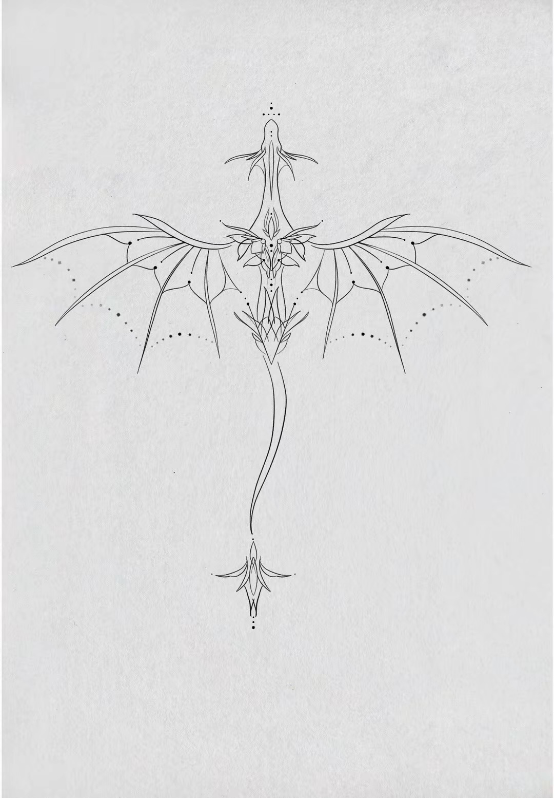
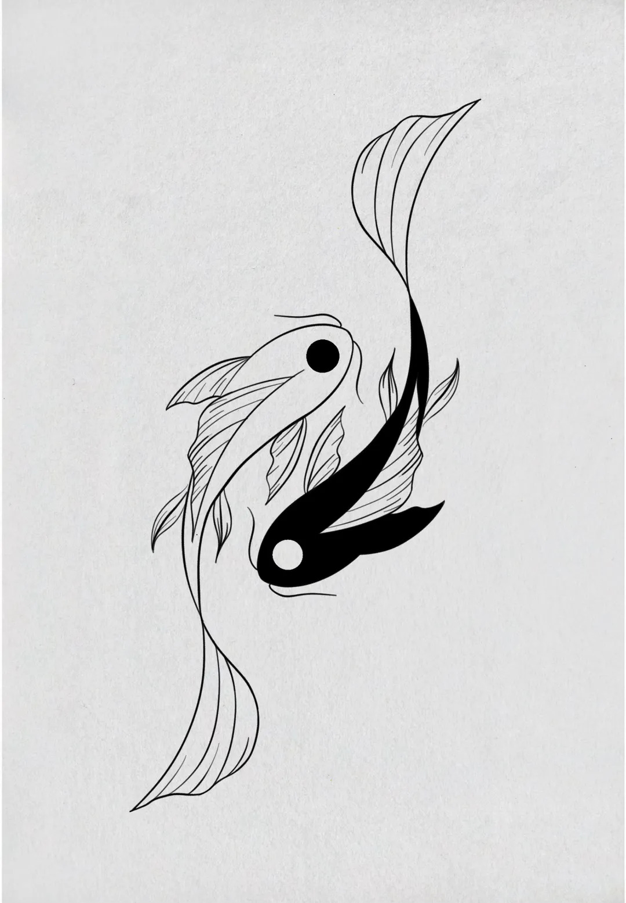

Design de tatouages
Je ne tatoue pas, je dessine. Des projets que d'autres iront faire encrer chez un tatoueur. Old school et ornemental surtout : deux écoles opposées que j'aime pour la même raison, le trait ne pardonne rien. Pas de calque, pas de retour arrière, pas de « on verra au rendu ».
Pour tenir le rythme, je me suis imposé un défi : 50 designs en 50 jours. Cinquante planches, une par jour, publiées au fur et à mesure. C'est là que j'ai compris qu'un dessin se juge d'abord à ce qu'on en enlève.
Voir les planches



